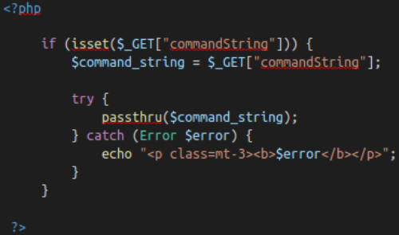

OWASP Top 10
1. Active Command Injection (Output in HTML)

In pseudocode, the above snippet is doing the following:
1. Checking if the parameter "commandString" is set
2. If it is, then the variable $command_string gets what was passed into the input field
3. The program then goes into a try block to execute the function passthru($command_string). You can read the docs on passthru() on PHP's website, but in general, it is executing what gets entered into the input then passing the output directly back to the browser.
4. If the try does not succeed, output the error to page. Generally this won't output anything because you can't output stderr but PHP doesn't let you have a try without a catch.
Tesing Active Command Injection:
Commands to try
Linux
• whoami
• id
• ifconfig/ip addr
• uname -a
• ps -ef
Windows
◇ whoami
◇ ver
◇ ipconfig
◇ tasklist
◇ netstat -an
Note: Command to get the shell of user --→ ps -p $$ Or echo $SHELL Or check last column of /etc/passwd
Note: Command to get OS info in Linux --→ hostnamectl Or lsb_release -a Or cat /etc/os-release
2. Broken Authentication
Flaws in Authentication:
• Brute force attacks: If a web application uses usernames and passwords, an attacker is able to launch brute force attacks that allow them to guess the username and passwords using multiple authentication attempts.
• Use of weak credentials: web applications should set strong password policies. If applications allow users to set passwords such as ‘password1’ or common passwords, then an attacker is able to easily guess them and access user accounts. They can do this without brute forcing and without multiple attempts.
• Weak Session Cookies: Session cookies are how the server keeps track of users. If session cookies contain predictable values, an attacker can set their own session cookies and access users’ accounts.
Mitigation:
• To avoid password guessing attacks, ensure the application enforces a strong password policy.
• To avoid brute force attacks, ensure that the application enforces an automatic lockout after a certain number of attempts. This would prevent an attacker from launching more brute force attacks.
• Implement Multi Factor Authentication - If a user has multiple methods of authentication, for example, using username and passwords and receiving a code on their mobile device, then it would be difficult for an attacker to get access to both credentials to get access to their account.
Example: Re-registration of User with a space. Say user “admin” already exists if not properly set, we can register a user named “ admin”.
As both are same for server. We will go into admin account.
3. Sensitive Data Exposure
Sensitive Information like Database Flat-files if kept in website root directory and not properly set can be accessed by the user.
The user can then download the Database file and enumerate in his/her local machine.
4. XML External Entity (XXE)
An XML External Entity (XXE) attack is a vulnerability that abuses features of XML parsers/data. It often allows an attacker to interact with any backend or external systems that the application itself can access and can allow the attacker to read the file on that system. They can also cause Denial of Service (DoS) attack or could use XXE to perform Server-Side Request Forgery (SSRF) inducing the web application to make requests to other applications. XXE may even enable port scanning and lead to remote code execution.
There are two types of XXE attacks: in-band and out-of-band (OOB-XXE)
1) An in-band XXE attack is the one in which the attacker can receive an immediate response to the XXE payload.
2) out-of-band XXE attacks (also called blind XXE), there is no immediate response from the web application and attacker has to reflect the output of their XXE payload to some other file or their own server.
What is XML?
XML (eXtensible Markup Language) is a markup language that defines a set of rules for encoding documents in a format that is both human-readable and machine-readable. It is a markup language used for storing and transporting data.
Why we use XML?
1. XML is platform-independent and programming language independent, thus it can be used on any system and supports the technology change when that happens.
2. The data stored and transported using XML can be changed at any point in time without affecting the data presentation.
3. XML allows validation using DTD and Schema. This validation ensures that the XML document is free from any syntax error.
4. XML simplifies data sharing between various systems because of its platform-independent nature. XML data doesn’t require any conversion when transferred between different systems.
Syntax
Every XML document mostly starts with what is known as XML Prolog.
<?xml version="1.0" encoding="UTF-8"?>
Above the line is called XML prolog and it specifies the XML version and the encoding used in the XML document. This line is not compulsory to use but it is considered a `good practice` to put that line in all your XML documents.
Every XML document must contain a `ROOT` element. For example:
<?xml version="1.0" encoding="UTF-8"?>
<mail>
<to>falcon</to>
<from>feast</from>
<subject>About XXE</subject>
<text>Teach about XXE</text>
</mail>
In the above example the <mail> is the ROOT element of that document and <to>, <from>, <subject>, <text> are the children elements. If the XML document doesn't have any root element then it would be considered wrong or invalid XML doc.
Another thing to remember is that XML is a case sensitive language. If a tag starts like <to> then it has to end by </to> and not by something like </To>(notice the capitalization of T)
Like HTML we can use attributes in XML too. The syntax for having attributes is also very similar to HTML. For example:
<text category = "message">You need to learn about XXE</text>
In the above example category is the attribute name and message is the attribute value.
XML External Entity - DTD
DTD stands for Document Type Definition. A DTD defines the structure and the legal elements and attributes of an XML document.
Let us try to understand this with the help of an example. Say we have a file named note.dtd with the following content:
<!DOCTYPE note [ <!ELEMENT note (to,from,heading,body)> <!ELEMENT to (#PCDATA)> <!ELEMENT from (#PCDATA)> <!ELEMENT heading (#PCDATA)> <!ELEMENT body (#PCDATA)> ]>
Now we can use this DTD to validate the information of some XML document and make sure that the XML file conforms to the rules of that DTD.
Ex: Below is given an XML document that uses note.dtd
<?xml version="1.0" encoding="UTF-8"?>
<!DOCTYPE note SYSTEM "note.dtd">
<note>
<to>falcon</to>
<from>feast</from>
<heading>hacking</heading>
<body>XXE attack</body>
</note>
So now let's understand how that DTD validates the XML. Here's what all those terms used in note.dtd mean
!DOCTYPE note - Defines a root element of the document named note
!ELEMENT note - Defines that the note element must contain the elements: "to, from, heading, body"
!ELEMENT to - Defines the to element to be of type "#PCDATA"
!ELEMENT from - Defines the from element to be of type "#PCDATA"
!ELEMENT heading - Defines the heading element to be of type "#PCDATA"
!ELEMENT body - Defines the body element to be of type "#PCDATA"
NOTE: #PCDATA means parseable character data.
Now we'll see some XXE payload and see how they are working.
1) The first payload we'll see is very simple. If you've read the previous task properly then you'll understand this payload very easily.
<!DOCTYPE replace [<!ENTITY name "feast"> ]>
<userInfo>
<firstName>falcon</firstName>
<lastName>&name;</lastName>
</userInfo>
As we can see we are defining a ENTITY called name and assigning it a value feast. Later we are using that ENTITY in our code.
2) We can also use XXE to read some file from the system by defining an ENTITY and having it use the SYSTEM keyword
<?xml version="1.0"?>
<!DOCTYPE root [<!ENTITY read SYSTEM 'file:///etc/passwd'>]>
<root>&read;</root>
Here again, we are defining an ENTITY with the name read but the difference is that we are setting it value to `SYSTEM` and path of the file.
If we use this payload then a website vulnerable to XXE(normally) would display the content of the file /etc/passwd
5. Broken Access Control
Websites have pages that are protected from regular visitors, for example only the site's admin user should be able to access a page to manage other users. If a website visitor is able to access the protected page/pages that they are not authorised to view, the access controls are broken.
IDOR (Insecure Direct Object Reference) is a type of Broken Access Control Vulnerability.
6. Security Misconfiguration
Security misconfigurations include:
Poorly configured permissions on cloud services, like S3 buckets
Having unnecessary features enabled, like services, pages, accounts or privileges
Default accounts with unchanged passwords
Error messages that are overly detailed and allow an attacker to find out more about the system
Not using HTTP security headers, or revealing too much detail in the Server: HTTP header
This vulnerability can often lead to more vulnerabilities, such as default credentials giving you access to sensitive data, XXE or command injection on admin pages.
Default Passwords
Pensive Notes: [https://github.com/NinjaJc01/PensiveNotes]
Default Credentials
Username : pensive
Password : PensiveNotes
7. Cross-Site Scripting (XSS)
XSS Explained
Cross-site scripting, also known as XSS is a security vulnerability typically found in web applications. It’s a type of injection which can allow an attacker to execute malicious scripts and have it execute on a victim’s machine.
A web application is vulnerable to XSS if it uses unsanitized user input. XSS is possible in Javascript, VBScript, Flash and CSS. There are three main types of cross-site scripting:
1. Stored XSS - the most dangerous type of XSS. This is where a malicious string originates from the website’s database. This often happens when a website allows user input that is not sanitised (remove the "bad parts" of a users input) when inserted into the database.
2. Reflected XSS - the malicious payload is part of the victims request to the website. The website includes this payload in response back to the user. To summarise, an attacker needs to trick a victim into clicking a URL to execute their malicious payload.
3. DOM-Based XSS - DOM stands for Document Object Model and is a programming interface for HTML and XML documents. It represents the page so that programs can change the document structure, style and content. A web page is a document and this document can be either displayed in the browser window or as the HTML source.
Examples:
HTML Injection
<h1>Hello</h1>
Javascript Injection
<script>alert("hello")</script>
<script>alert(document.cookies)</script>
<script>document.querySelector('#thm-title').textContent = 'I am a hacker'</script>
Iframe Injection
<iframe src="javascript:alert('xss')">
8. Insecure Deserialization
Insecure deserialization is replacing data processed by an application with malicious code; allowing anything from DoS (Denial of Service) to RCE (Remote Code Execution) that the attacker can use to gain a foothold in a pentesting scenario.
Specifically, this malicious code leverages the legitimate serialization and deserialization process used by web applications.
Serialisation is the process of converting objects used in programming into simpler, compatible formatting for transmitting between systems or networks for further processing or storage.
Alternatively, deserialisation is the reverse of this; converting serialised information into their complex form - an object that the application will understand.
Cookie
| Attribute | Description | Required? |
|---|---|---|
| Cookie Name | The Name of the Cookie to be set | Yes |
| Cookie Value | Value, this can be anything plaintext or encoded | Yes |
| Secure Only | If set, this cookie will only be set over HTTPS connections | No |
| Expiry | Set a timestamp where the cookie will be removed from the browser | No |
| Path | The cookie will only be sent if the specified URL is within the request | No |
9. Components with Known Vulnerabilities
High Severity of 3
10. Insufficient Logging & Monitoring
When web applications are set up, every action performed by the user should be logged. Logging is important because in the event of an incident, the attackers actions can be traced. Once their actions are traced, their risk and impact can be determined. Without logging, there would be no way to tell what actions an attacker performed if they gain access to particular web applications. The bigger impacts of these include:
1. regulatory damage: if an attacker has gained access to personally identifiable user information and there is no record of this, not only are users of the application affected, but the application owners may be subject to fines or more severe actions depending on regulations.
2. risk of further attacks: without logging, the presence of an attacker may be undetected. This could allow an attacker to launch further attacks against web application owners by stealing credentials, attacking infrastructure and more.
The information stored in logs should include:
• HTTP status codes
• Time Stamps
• Usernames
• API endpoints/page locations
• IP addresses